When viewing the Spaces main screen, by clicking a Space name, detailed information on the Space can be accessed:
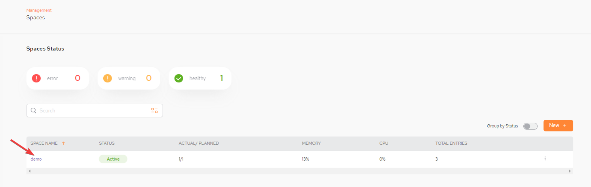
The resulting screen has three tabs:
A log can be generated or a space can be undeployed by selecting the kebab menu (vertical three-dot menu) on the far top right:
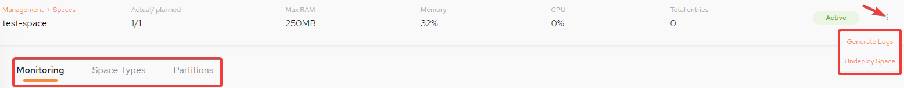
Then select eitherGenerate Logs or Undeploy Space:
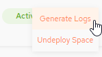
The Monitoring tab displays graphs showing various Space-related statistics.
Note that a drop-down list on the right side of the screen allows you to change the reported time interval:
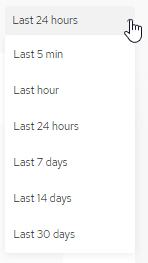
The following graphs are available:
This graph shows the I/O operations over time. You can click the operation type (Read, Write, etc.) or select them all for all operation types (default),
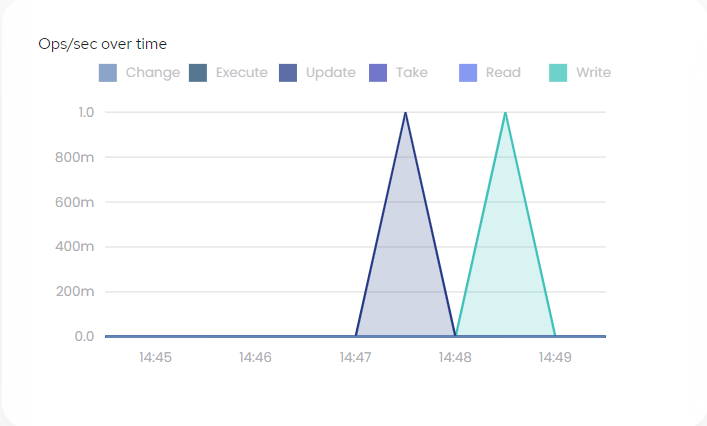
This graph shows the total I/O operations over time. You can click the operation type (Execute, Update, etc.) or view the Total for all operation types (default),
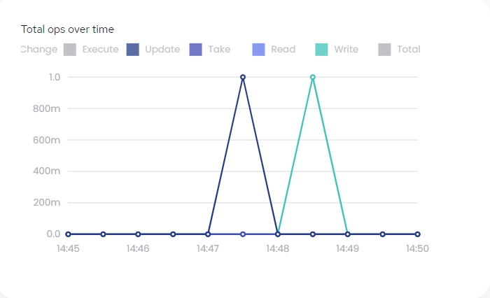
This graph displays the memory utilization over time, as the percent of memory used in the Space.
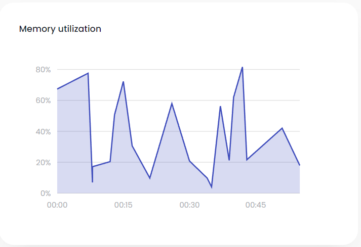
This graph displays the percent of the CPU that was used in the Space.
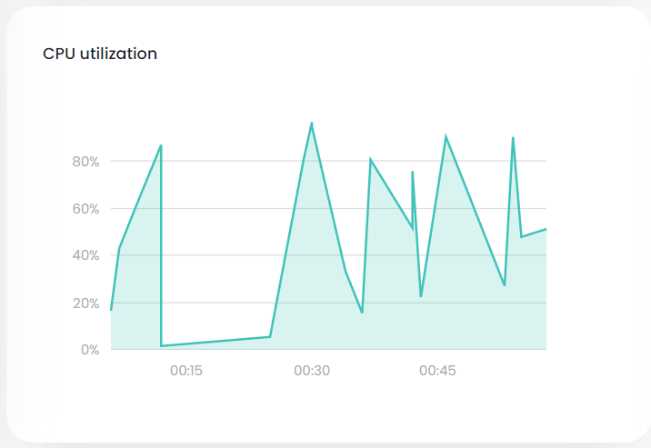
These bar charts show up to five instances (object types) with the highest number of objects (rows). The
average line indicates the average number of objects for all object types.
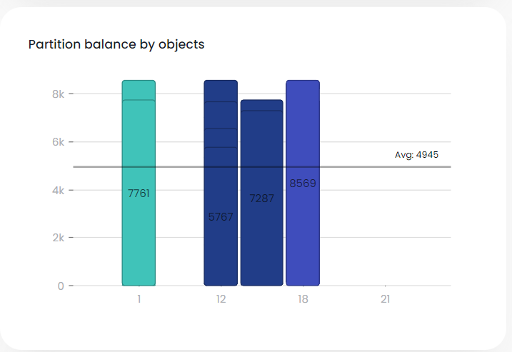
These bar charts show up to five instances (object types) with the highest memory usage. The
average line indicates the average memory usage for all object types.
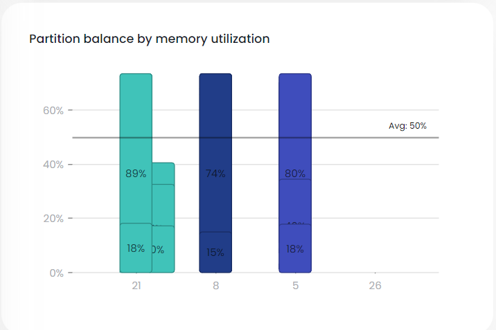
If Tiered Storage has not been defined, the following tiered storage graphs will not be displayed.
This graphs shows the Tiered Storage hit to hot storage (RAM memory; left side of graph) and to warm storage (SSD memory; right side of graph).
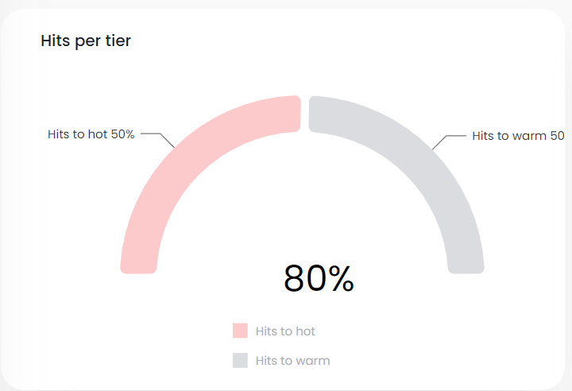
This graphs shows up to five Tiered Storage objects with the greatest divergence from the expected usage. You can scroll this graph to show all objects in descending order (by distance from expected).
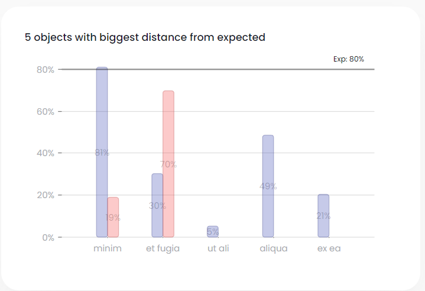
If Redo Log has not been defined, the following redo log graphs will not be displayed.
This graph shows the size of the redo log over time.
Note that you can click the drop-down list (total in this example) to specify a specific instance.
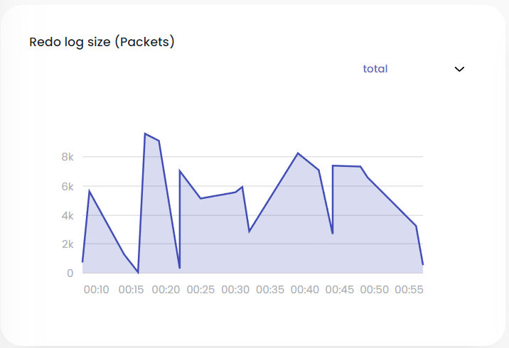
This graph shows the percent of the redo log memory that was used over time.
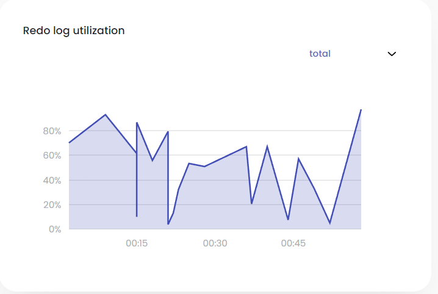
This graph shows the percentage of the redo log that is currently in RAM and in SSD.
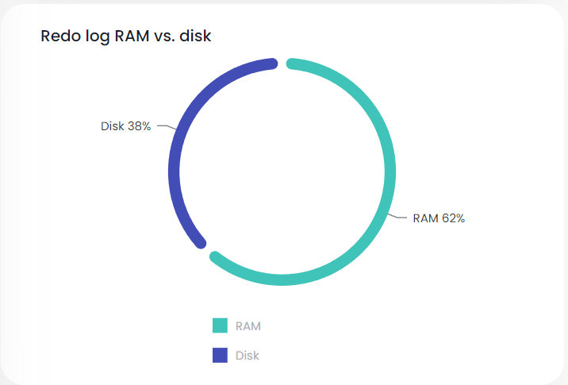
The Space Types tab displays a list of the Space types (tables) associated with the Space.
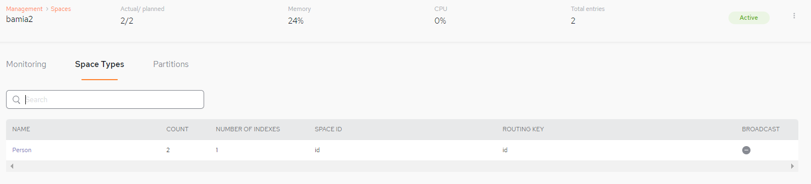
Each row represents one table in the Space. The Space Types fields are as follows:
Click one of the Space Types to see detailed information for the object type's properties and indexes. The Space Types information is divided into three categories:
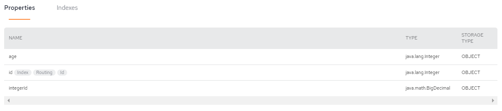
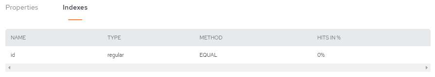
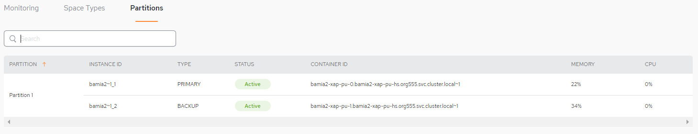
The Partitions tab displays details about the partitions where the Space data is stored.
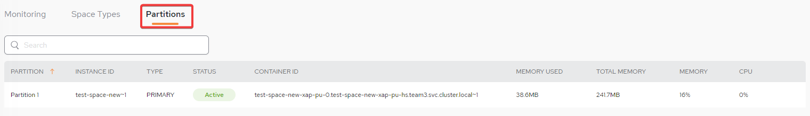
The Partitions tab displays details about the partitions where the Space data is stored.
For more information: